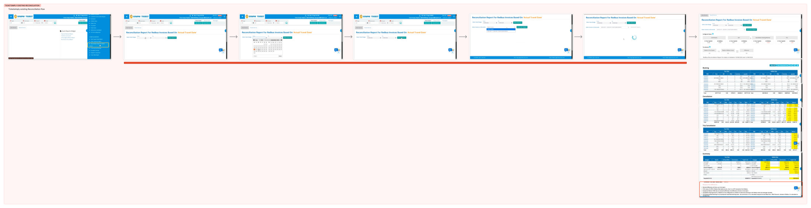
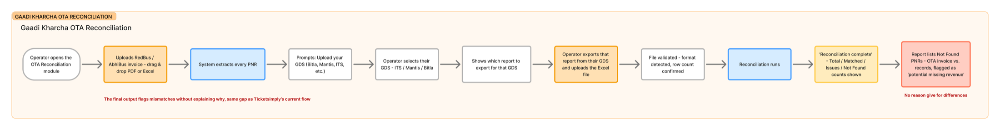

Challenge
Financial data an operator can act on without re-verifying it by hand – while the tool they use today (Gaadi Kharcha) has trained them not to trust an explanation they can’t check.
Invoice reconciliation tool
Operators didn’t need a cleaner table of mismatches – they needed to know whether a difference was worth their time. I redesigned the flow around that, tested two directions head-to-head with real operators, and shipped the one that made the “why” visible without a click.


Objective
The existing flow, and the tool operators actually reached for instead, both stopped at “here’s what doesn’t match.” Neither ever explained why – so every reconciliation still ended in manual digging.
Context
Bus operators reconcile every invoice redBus sends them against their own records – checking that what they were paid matches what they believe they’re owed, PNR by PNR, invoice after invoice.
An operator gets a spreadsheet of flagged rows and has to go dig – manually, invoice by invoice – before deciding whether a difference is even worth chasing.


Scoping
Challenge
Financial data an operator can act on without re-verifying it by hand – while the tool they use today (Gaadi Kharcha) has trained them not to trust an explanation they can’t check.
Scope
Process
01
Two in-person operator interviews turned a screen-level brief into a product-level reframe: operators don’t want a cleaner mismatch table, they want to know whether a difference is worth their time.
Research →02
Two manual uploads became an auto-reconciliation flow, syncing directly from redPro via API – removing the exact step operators complained about, unprompted, in research.
Redesign →03
The AI Summary layer only states what it can prove – a rule that exists because I caught it lying to me first, in my own first draft.
System →01 · Research


“Reconciliation means confirming me the difference and where the difference is going – it’s like matching.”
“Justification.”
The entire answer to “what does resolved mean to you.”
Neither operator described wanting a cleaner table. Both described wanting to be told why. Two more answers on those sheets fed directly into shipped decisions.
Rajesh, unprompted
“Offers and deals opted by operators are not tracked, and that creates difference.”
Shipped as
“Incorrect offer charges” exists as its own discrepancy category, rather than a generic “other.”
Rajesh, on default detail level
“Don’t want to see every detail – summary, see root-level summary, service and bus number. They want NRR.”
Shipped as
The AI Summary’s first rule: lead with the state, not the problem count.
It has the same gap: two manual uploads per run, and mismatches flagged without ever being explained.

“If I know WHY, the difference is manageable.”
02 · Redesign
The original flow required uploading both a bank statement and an OTA invoice by hand – the exact step operators complained about, unprompted.

Testing
Comprehension questions with known correct answers, timed tasks – and one question that cut past politeness.
Concept 1 — V1
Two donut charts visualise the invoice and difference-receivable breakup by category, on top of the same accordion detail as V2. Operators saw the biggest slice of the gap before opening a single row.

Simpler, cleaner-looking screen – same headline number, same accordion detail underneath, but no visual breakup. Operators could see that there was a gap, not what kind, without digging in.
The question that cut past politeness“Would you send a dispute to redBus based only on this, without checking by hand?” A screen operators like but don’t trust enough to act on hasn’t solved the actual problem.
Why V1 won
Data visualisation, not information architecture.
Both versions gave operators identical accordions and identical PNR-level detail. V1’s charts made the “why” visible without a click. V2 made operators go looking for it, which quietly reintroduced the exact problem the redesign existed to fix.
03 · System
“97% reconciled,” not “33 mismatches found.” Opening with the problem count turns every invoice into a perceived crisis.
Caught a real bug where the category breakdown didn’t sum to the headline number. Now it only states what it can trace to a real value.
Every claim is one click from its source – clicking “33 PNRs” filters straight to those rows.
The escalation screen gets a terse one-line version, so it never competes with the audit trail for attention.
The same pattern, scaled down – one line on the escalation screen, so it doesn’t compete with the audit trail below it.

Visual language
More from this flow